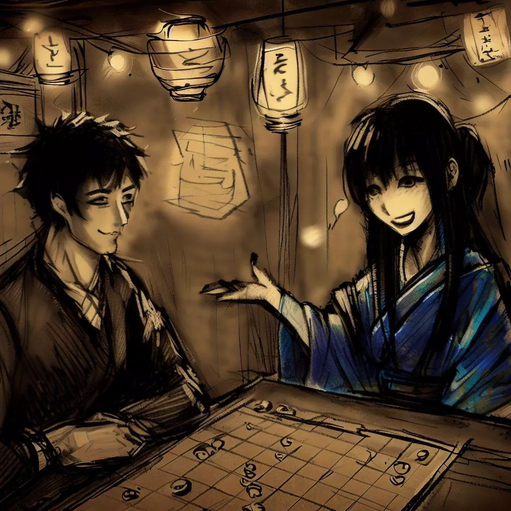
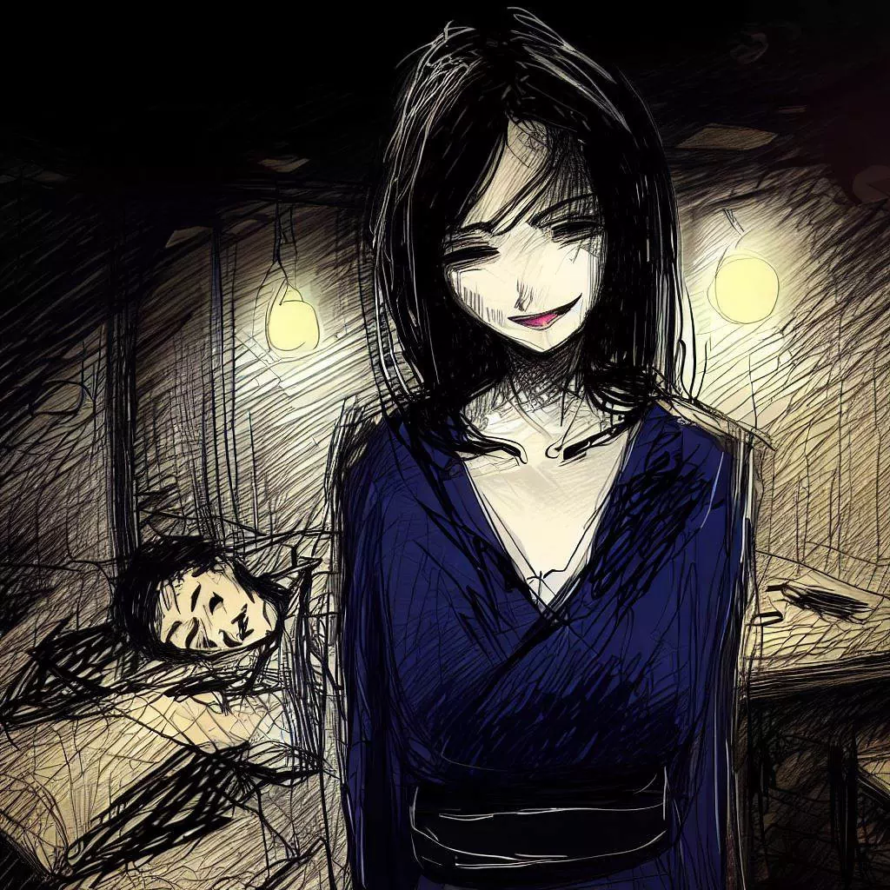

Komayo: เสียงสะท้อนลึกลับของเกม Ogi
ฉันอยากจะใช้เวลาสักครู่เพื่อแสดงความขอบคุณ Komayo ที่แนะนำให้ฉันรู้จักกับเกมกลยุทธ์ที่น่าสนใจนี้ เสน่ห์และความลึกลับของมันสร้างความประทับใจไม่รู้ลืมในชีวิตของฉัน ต่อไปนี้คือเรื่องราวการพบกันของเรา ความทรงจำอันล้ำค่าที่ฉันอยากแบ่งปันผ่านบรรทัดเหล่านี้
สำนักงานหลบหนี
หลังจากใช้เวลาทั้งวันในบรรยากาศที่ปราศจากเชื้อและจืดชืดในที่ทำงานของฉัน ในที่สุดวันที่รอคอยมานานก็มาถึง เหมือนกับการปลดปล่อย จากนั้นวันก็เข้าสู่ช่วงพลบค่ำ และฉันทิ้งเครื่องปรับอากาศเย็นฉ่ำไว้เบื้องหลังเพื่อดื่มด่ำกับสายลมเย็นอันนุ่มนวลที่เติมพลังให้กับโอซาก้า
ความคลั่งไคล้ในตอนกลางวันแม้จะไร้ความหมาย แต่ก็ค่อยๆ จางหายไป หลีกทางให้กับความเงียบสงบในยามค่ำคืน ความคิดของฉันซึ่งยุ่งเหยิงไปด้วยงานหนักที่ไม่น่าสนใจของวัน เริ่มชัดเจนขึ้นเมื่อเผชิญกับความเวิ้งว้างที่เต็มไปด้วยดวงดาวและความสงบเงียบของเมือง

ฉันปล่อยให้ตัวเองถูกนำทางผ่านตรอกซอกซอยที่ยุ่งเหยิงของเมือง ความน่าเบื่อหน่ายของวันดูเหมือนจะหายไปทั่วทุกมุมและถูกแทนที่ด้วยความลึกลับที่ไม่รู้จัก ภาพเงาที่นุ่มนวลและเป็นมิตรของตึกระฟ้าภายใต้ม่านยามค่ำคืน แสงไฟระยิบระยับตัดกับท้องฟ้าคอนกรีต ซึ่งตัดกับรูปลักษณ์ที่ดูน่ากลัวในตอนกลางวัน
บรรยากาศที่มีชีวิตชีวาของตรอกช็อปปิ้ง กลิ่นของร้านอาหารริมทาง และเสียงพูดคุยที่พึมพำในตอนกลางคืนสร้างภาพเมืองที่เบิกบานใจ จิตใจของฉันแม้จะอ่อนล้า แต่ก็แสวงหาความท้าทายทางสติปัญญา หลีกหนีจากความกังวลของวัน ตอนนั้นเองที่ฉันเห็นป้ายที่สุขุม นั่นคือ Bar de la Régence ซึ่งเป็นสถานที่ที่มีชื่อเสียงซึ่งผู้เล่นโชกิที่มีพรสวรรค์และมีชื่อเสียงที่สุดในยุคนั้นเคยเผชิญหน้ากัน
สถานที่หลบภัยแห่งนี้ซ่อนตัวอยู่ในตรอกอันเงียบงันแห่งนี้ เสนอตัวเองให้ฉัน กระซิบในใจฉันถึงเสียงเรียกอันละเอียดอ่อนของเกม เสียงสะท้อนแห่งดุลยพินิจของมัน ควบคู่กับความเป็นไปได้ของเกม ดังก้องอยู่ในตัวฉันราวกับเสียงกระซิบแผ่วเบา ดึงดูดความเย้ายวนใจให้อบอวล ด้วยความลึกลับและอยากรู้อยากเห็น
ที่ซ่อนของปาร์ตี้
แสงที่นุ่มนวลและเรียบง่ายของ Bar de la Régence ทักทายฉัน บรรยากาศที่อบอุ่นทำให้รู้สึกสงบ ความเงียบสงบของสถานที่นี้ถูกแทรกซึมด้วยเกมโชงิหลายเกม ซึ่งได้ทำให้ค่ำคืนมีชีวิตชีวาขึ้นอย่างไม่ต้องสงสัยสำหรับผู้เล่นหลายชั่วอายุคนที่ต้องการหลบหนี
ก่อนที่จะดำดิ่งสู่โลกของเกม ฉันสั่งสาเกหนึ่งแก้วที่เคาน์เตอร์ พื้นไม้ปาร์เกต์โบราณประท้วงเบา ๆ ใต้เท้าของฉัน ในขณะที่สายตาของฉันปรับให้เข้ากับแสงที่เงียบสงัด เสียงที่นุ่มนวลของชิ้นโชกิ เสียงกระซิบของการสนทนา และเสียงกรอบแกรบของแฟนๆ เพิ่มสัมผัสที่ลึกลับให้กับบรรยากาศ กลิ่นหอมของไม้โบราณผสมกับธูปช่วยปลอบประโลมประสาทสัมผัสของฉันและเตรียมฉันให้พร้อมสำหรับการสู้รบทางปัญญาที่จะมาถึง
ผู้มีอุปการะคุณทั้งชายและหญิงทุกวัยหลงใหลในเกมโชกิอย่างหลงใหล แต่ละคนแสดงความตึงเครียด ความสุข หรือความผิดหวังที่เกี่ยวข้องกับการเล่นแต่ละช็อตในแบบของตัวเอง มันเป็นกลยุทธ์ที่เงียบงันและไหวพริบที่เปิดเผยต่อหน้าต่อตาฉัน
กำลังมองหาคู่ต่อสู้ในตอนเย็น สายตาของฉันไปสะดุดตากับผู้หญิงคนหนึ่งที่นั่งอยู่คนเดียวที่โต๊ะเปลี่ยว การปรากฏตัวของเธอที่เงียบสงบและความงามที่ละเอียดอ่อนของเธอทำให้ฉันอยากรู้อยากเห็น ด้วยขั้นตอนที่มุ่งมั่นแต่รอบคอบ ฉันเข้าไปหา วาดรอยยิ้มสุภาพและเสนอเกมให้เขา

บทเรียนกลางคืน
คำตอบของเขาต่อข้อเสนอของฉันคือรอยยิ้มที่ทำให้ใบหน้าของเขาสว่างขึ้น เป็นการยอมรับโดยปริยายโดยไม่ต้องใช้คำพูดใดๆ
ด้วยความสง่างามที่คาดไม่ถึง เธอเปิดบอร์ดเกมซึ่งก่อนหน้านี้ซ่อนอยู่ใต้ผ้าเนื้อเนียน สายตาของฉันจับจ้องไปที่พื้นผิวการเล่นทันที ซึ่งดูกระชับกว่าปกติโดยไม่คาดคิด มันไม่ใช่โชกิบังแบบดั้งเดิมที่ฉันเคยเห็น แต่เป็นตารางสี่เหลี่ยม 8 สี่เหลี่ยมที่ใกล้ชิดมากขึ้นด้านข้าง ก่อนที่ฉันจะทันได้พูดความประหลาดใจออกไป ชายแปลกหน้าผู้สง่างามก็เข้ามาเคลียร์ความสับสนของฉัน เสียงของเธอเคล้ากับอากาศรอบข้างราวกับสายลมอ่อนๆ ในฤดูร้อน
“มันคือโองิ เกมแห่งราชา” เธอประกาศอย่างมั่นใจ "เราแต่ละคนมีชุด 18 ชิ้นที่นั่นเพื่อเริ่มเกม" ดวงตาของเธอดูขบขันในขณะที่เธอเปิดเผยรายละเอียดที่น่าสนใจเหล่านี้

“ในกระดานหมากรุกที่มีภาพเงาดำนี้ ร่างหนึ่งโดดเด่นด้วยความยิ่งใหญ่ที่เห็นได้ชัด” เธอระบุพร้อมชี้ไปที่ชิ้นส่วนกลางที่มีความสง่างามเป็นพิเศษ "นี่คือเจ้าหญิง ประดับประดาด้วยศักดิ์ศรีของคนโง่และเสรีภาพอันไร้ขอบเขตของนักขี่ม้า เธอปกครองด้วยกลเม็ดเด็ดพรายและอำนาจเหนือโองิบัง สูดกลิ่นอายของความโรแมนติกเข้าสู่โชงิร่วมสมัยนี้"
รอยยิ้มของเขากว้างขึ้นเมื่อเห็นความประหลาดใจของฉัน แววหยอกล้อส่องประกายในดวงตาของเขา ความซุกซนที่ทำให้ความลึกลับรอบตัวเขาสูงขึ้น เธอเริ่มวางหมากบนกระดาน นิ้วที่ว่องไวและแม่นยำของเธอทำให้สนามรบในอนาคตของเราเคลื่อนไหว
ขณะที่เธอกำลังประกอบชิ้นส่วน ฉันสังเกตเห็นความแตกต่างอีกอย่างหนึ่ง: หอคอยที่ตั้งอยู่ตรงมุมของโองิบัง "หอกแบบดั้งเดิมถูกแทนที่ด้วยหอคอยเหล่านี้" เธออธิบายราวกับอ่านความคิดของฉัน "นำมิติพิเศษมาสู่การแข่งขันของเรา"
ตอนนี้ชิ้นส่วนต่างๆ ถูกจัดวางแล้ว ตัวโกงทุกตัว นายพลทุกตัว ตัวเบี้ยทุกตัววางเรียงกันเป็นปี่เป็นขลุ่ย เมื่อคาดหวังว่าการต่อสู้จะมาถึง ฉันพบว่าตัวเองถูกดึงดูดอย่างไม่อาจต้านทานต่อปริศนาที่เปิดเผยใหม่นี้ ทำให้ชิ้นส่วนทั้งหมดดูน่าหลงใหลมากขึ้นด้วยแสงระยิบระยับสีทองและการจ้องมองที่เปล่งประกายของศัตรูลึกลับของฉัน
การทดลองของวิญญาณ
เสียงนาฬิกาเดินคั่นเวลาในขณะที่ความเงียบของการต่อสู้ถูกขัดจังหวะด้วยเสียงแผ่วเบาของชิ้นส่วนบนกระดานเท่านั้น บิชอปเคลื่อนไหวด้วยความมุ่งมั่น อัศวินกระโดดอย่างกล้าหาญ และเจ้าหญิงครองสนามรบด้วยประสิทธิภาพที่น่าประทับใจ จังหวะการต่อสู้ที่แทบจะมองไม่เห็นเต็มห้อง ทำให้เกิดความตึงเครียดที่จับต้องได้
ด้วยทักษะที่น่าตกใจ ศัตรูที่ลึกลับของฉันจึงกำกับชิ้นส่วนของเขา ผู้ที่ถูกจับแทนที่จะถูกกำจัดกลับได้รับการแนะนำอย่างชำนาญ โดดร่มหลังแนวของฉัน อัดฉีดพลวัตที่เปลี่ยนแปลงเข้าสู่การต่อสู้ การเคลื่อนไหวแต่ละครั้งเป็นบทเรียนเกี่ยวกับกลยุทธ์ แต่ละชิ้นเชื่อมต่อกันด้วยสายสัมพันธ์ที่มองไม่เห็นซึ่งถักทอด้วยความพิถีพิถันในการผ่าตัด
ฉันยืนหยัด จัดการกับชิ้นส่วนของฉันด้วยความมุ่งมั่นอย่างดุเดือด ป้องกันการโจมตีของเขาด้วยการป้องกันที่เตรียมการอย่างรอบคอบ แต่การตัดสินใจแต่ละครั้งดูเหมือนจะดึงพลังงานสำรองของฉันออกมา การเคลื่อนไหวแต่ละครั้งหนักขึ้นและหนักขึ้นเพื่อดำเนินการ เปลือกตาของฉันเริ่มจะหนักอึ้ง ความเหนื่อยล้าพยายามเกาะพื้น
และในขณะที่ฉันพยายามลืมตาขึ้น นอนหลับ ศัตรูตัวฉกาจคนนั้นก็เข้ายึดครอง ร่างกายของฉันอ่อนล้า ไฟในบาร์เต้นระบำต่อหน้าดวงตาที่มืดมิดของฉัน ฉันดำดิ่งสู่ความมืดที่สงบนิ่ง ภาพสุดท้ายที่ฝังแน่นในความทรงจำของฉันคือรอยยิ้มแห่งชัยชนะของศัตรูผู้ลึกลับของฉัน ส่องแสงระยิบระยับราวกับพระจันทร์อันห่างไกลบนท้องฟ้าสีคราม

เสียงสะท้อนแห่งรุ่งอรุณ
เวลาดูเหมือนจะระเหยไป กลืนหายไปโดยความมืดที่ปกคลุมจิตใจของฉัน การเปลี่ยนผ่านเข้าสู่ความมืดเป็นไปอย่างราบรื่นและไร้เสียง ปล่อยให้ฉันต้องเดินฝ่าหมอกอันน่าพิศวง จิตใจของฉันพุ่งไปในทะเลแห่งความสับสนดิ้นรนเพื่อโผล่ออกมาจากความมืด
เหมือนเรือที่หายไปในตอนกลางคืน ในที่สุดฉันก็พบทางกลับไปสู่แสงสว่างของวัน ตาของฉันเปิดออกไปยังห้องที่เกือบจะไม่เปลี่ยนแปลง อาบด้วยแสงอ่อนๆ ของรุ่งอรุณ โองิบังยืนอยู่ขณะที่ฉันจากไป เป็นพยานเงียบๆ ถึงการต่อสู้ในค่ำคืนนี้ อย่างไรก็ตาม ตอนนี้ที่นั่งของคู่ต่อสู้ของฉันยังว่างอยู่ รัศมีลึกลับของหญิงสาวได้สลายไปราวกับความฝันเมื่อรุ่งสาง
รู้สึกได้ถึงน้ำหนักของการไม่อยู่ของเขา ความว่างเปล่าที่หาค่าไม่ได้ที่ทำให้อากาศหนักขึ้น ห้องเงียบลง สายตาของฉันเลื่อนไปที่โองิบังและตกลงบนแผ่นกระดาษที่พับอย่างเรียบร้อยข้างๆ บอร์ดเกม ด้วยความหวาดหวั่นบางอย่างฉันจึงคว้ามันไว้
คำเดียวถูกจารึกไว้ที่นั่น "ขอบคุณ" พร้อมด้วยชื่อ - "Komayo" ลายเซ็นอันสง่างาม ร่องรอยสุดท้ายของการเผชิญหน้าที่หายวับไปและยังคงโดดเด่น ถูกใช้ที่ Bar de la Régence เล่นโองิกับโคมาโยะที่เข้าใจยากและน่าหลงใหล